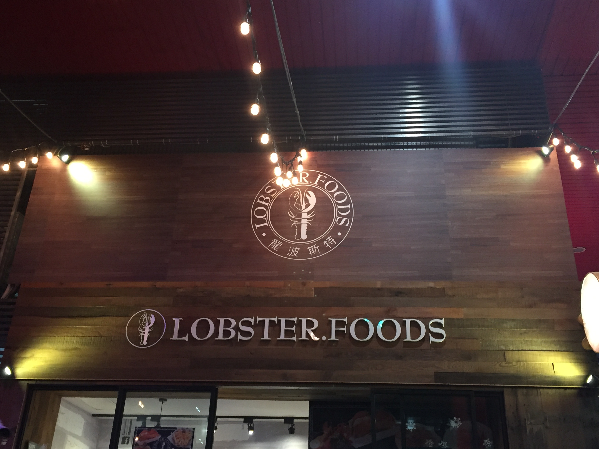
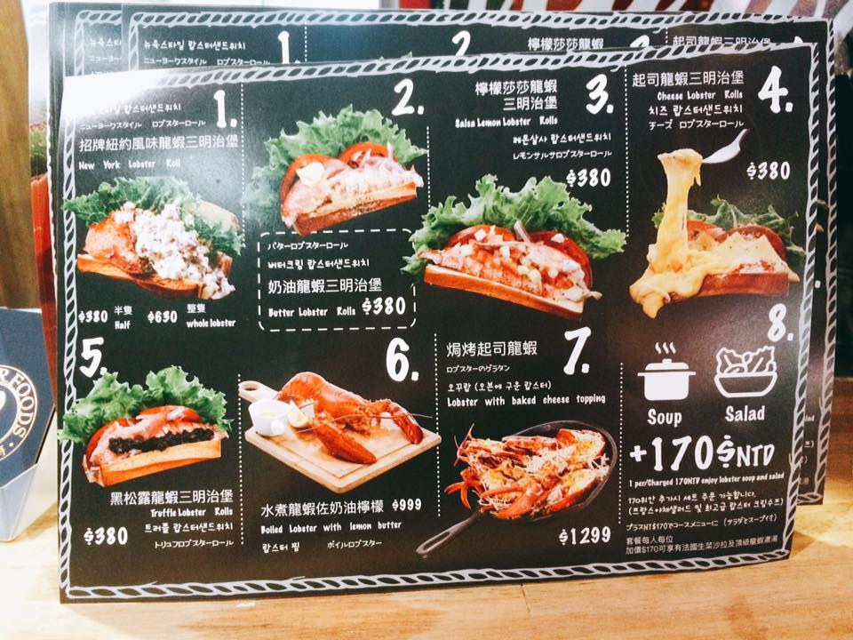

Although in Taiwan, most lobsters in restaurants are import from Australia, the most wanted lobster is actually from Boston.
This restaurant is located in Xinyi disrict, exactly on the groundfloor of ViewShow cinema. The food provided here is mainly the sandwich for poeple to grab and eat on your way, or bring it into cinema when watching movies. Additionally, if you prefer sitting down and having a proper meal in the restaurant, there is also out door seats for you.
There are many different sandwiches for your choices. The take away menu is as followed:
As you probably already found, there are many different flavors for the sandwiches. We have tried 'New York' classic flavor and 'Cheese' flavor as our first experience.
The taste is pretty good, as the flavor is what you have chosen for personal preference. However, the best thing is not about the flavor, but the lobster you can feel in your mounth when you bite.
The springy texture just tells you how much fresh lobster meat was placed in the sandwich which also provides you the huge satiscation of eating LOBSTER.
All in all, the sandwich is quite a good choice when you want to try lobster, howevr, please also be noted the price is as high quality as the food. (please refer to the menu above) So, if oyu are well-prepared, come and try the tasted sandwich here!